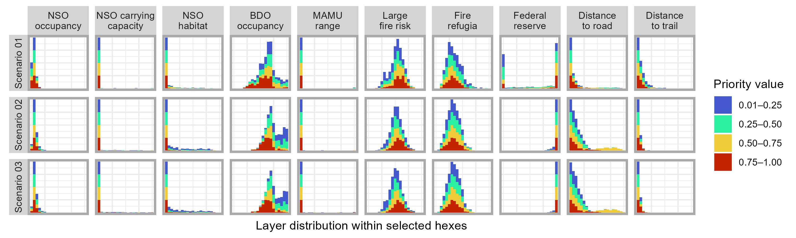

This table summarizes the parameter settings for each prioritization scenario evaluated in this batch. Note that fire suitability, distance to road, and distance to trail are provided to prioritizr as penalties, and so positive values mean that we aim to avoid them. Fire refugia and reserve, on the other hand, are input as penalties are interpreted as incentives, and so we use negative values to tell prioritizr that we want solutions containing more of these layers.
Use this interactive map to explore the spatial distribution of hexes selected for barred owl removals (management) across scenarios. Fill colors of hexes in the map correspond to the relative importance of each hex, or how high priority it is relative to other hexes selected for removals, where warmer colors indicate higher priority. Hexes considered by prioritizr but not selected for removals are shaded gray. The maximum number of hexes that could be selected for management is 25% of the total hexes in the geographic area under consideration.
This table summarizes mean layer values within selected hexes across scenarios. All variables were scaled to 0-1 to improve prioritizations and aid simple interpretation. In other words, a value of 0 represents the lowest value of a given variable observed in the NWFP region, and a 1 represents the greatest value of a given variable observed in the NWFP region. The intent of this table is to demonstrate general shifts in the coverage of important variables across scenarios.
This plot visualizes the frequency distribution of relevant variables (columns of grid) across scenarios (rows of grid). X-axis units are omitted because variables were 0-1 scaled and thus these plots provide qualitative (rather than quantitative) summaries. Frequency distributions were further split into priority bins and colored accordingly, where (eg) red maps the frequency distribution of a given variable within high-priority hexes from a given scenario.
